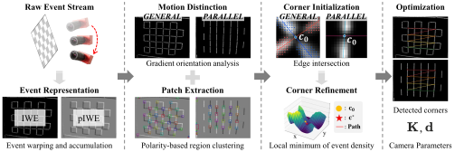

Checkerboard Calibration for Event Camera

The framework converts a raw event stream into both IWE and pIWE, which are representations well-suited for extracting corner points. These representations are then used by the motion distinction module to determine the motion case and by the pattern detection module to detect corners accordingly. The detected corners are then fed into the intrinsic optimization process to estimate camera parameters.